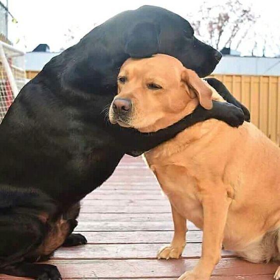

Primero que todo, me disculpo por la simplicidad del regalo, pero hice mi mejor esfuerzo. Este proyecto de una semana está hecho de amor, cariño y el poco conocimiento que tengo. Si estás leyendo esto en Navidad, feliz Navidad, corazón! Todo lo que veas en este proyecto contiene todo mi amor, cariño y alma.
Probablemente te estés preguntando por qué cree esta página, por qué te escribi una carta, o por qué estoy expresándome de esta manera. Soy alguien que, cuando siente, no puede evitar mostrarlo; siempre deseo lo mejor para los demás, incluso si eso implica lastimarme un toque. Desde que te conocí, noté que eras una persona que da todo por quienes quiere, pero a veces descuida tu propia atención. Entonces, si no lo haces vos, alguien tiene que hacerlo. Por eso hice esto, me dedique a recopilar todas las cosas que a lo largo de estos meses me hicieron acordar a vos, tanto canciones, como videos como todo. Desde que te mencioné que me haces acordar a la canción de Sunflower aparecieron muchas más que siento que merecían ser escuchadas.
Obviamente las canciones y los videos no son suficientes para mencionar todo lo que siento por vos, siempre intento darlo todo para vos, darte mi cariño, darte mi apoyo y todo lo que necesitas siempre.
Todo es por vos, y siempre va a ser por vos, el amor que te tengo simplemente es enorme, siempre estas para mi y todo lo que queria es agradecer.
Asi que sin mas palabras arriba podes entrar a la parte de canciones y a la parte de videos para poder ver todo lo que es para vos.
